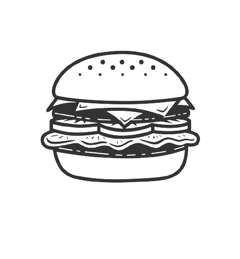

BIKESTOPBurgers
Home of the best char-broiled gourmet burgers, pita sandwiches and more - right in the heart of Kalibo.
Bite into the adventure with our Wedges Con Carne, Double Patty Cheeseburger, Tacos and many more including the now infamous Milo Dinosaur Shake
Our Menu

Guacamole Burger
Succulent patty meets creamy avocado bliss. This juicy burger gets a fresh, zesty upgrade with a dollop of homemade guacamole
Potato Wedges
Golden-fried wedges, fluffy inside, crispy outside. A timeless favorite, ready to dunk in your favorite sauce
Double Patty Burger
Twice the beef, double the joy. Two hefty patties, grilled to juicy perfection, stacked high and dripping with flavor

Pita Wrap
Bursting with fresh flavors of tuna or chicken, every wrap starts with warm, fluffy pita bread, ready to hug your delicious ingredients
Wedges Con Carne
Crispy wedges golden like sunset hold a fiery heart of chili con carne, all smothered in a molten cheese avalanche dashed with green onions
Milo Dinosaur Shake
Creamy shake embraces rich Milo powder, swirling into a childhood dream of chocolate malt goodness on your taste buds
About Us
Born in March 2022, our journey began with a passion for two things: bikes and fantastic food.
At Bikestop Burgers, we take pride in crafting burgers that pack a punch – each bite delivering a symphony of flavors. Our commitment to quality extends beyond the kitchen; it's embedded in the very fabric of our establishment. From laughter of friends sharing a moment to families enjoying a meal together, Bikestop Burgers is a place where the spirit of camaraderie thrives.
Whether you're a biker or a family seeking a delicious meal, Bikestop Burgers welcomes you to share in our passion for great food and good times!